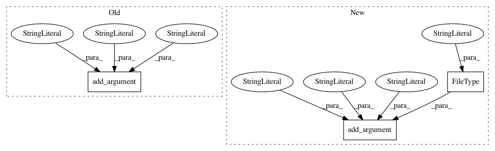

85400dbc865f2d8e632242153fa4576e711f104d,cnvlib/commands.py,,,#,470
Before Change
P_anti.add_argument("-g", "--access",
help=Regions of accessible sequence on chromosomes (.bed), as
output by genome2access.py.)
P_anti.add_argument("-a", "--avg-size", type=int, default=200000,
help=Average size of antitarget bins (results are approximate).
[Default: %(default)s])
P_anti.add_argument("-m", "--min-size", type=int,
help=Minimum size of antitarget bins (smaller regions are dropped).
[Default: 1/16 avg size, calculated])
P_anti.add_argument("-o", "--output", help=Output file name.)
After Change
P_access.add_argument("-x", "--exclude", action="append", default=[],
help=Additional regions to exclude, in BED format. Can be
used multiple times.)
P_access.add_argument("-o", "--output",
type=argparse.FileType("w"), default=sys.stdout,
help="Output file name")
P_access.set_defaults(func=_cmd_access)
// antitarget ------------------------------------------------------------------
In pattern: SUPERPATTERN
Frequency: 3
Non-data size: 3
Instances
Project Name: etal/cnvkit
Commit Name: 85400dbc865f2d8e632242153fa4576e711f104d
Time: 2016-10-05
Author: eric.talevich@gmail.com
File Name: cnvlib/commands.py
Class Name:
Method Name:
Project Name: deeptools/HiCExplorer
Commit Name: 791652b1422e6badf67a230eae8e49b12487950b
Time: 2020-07-07
Author: wolffj@informatik.uni-freiburg.de
File Name: hicexplorer/hicQuickQC.py
Class Name:
Method Name: parse_arguments
Project Name: etal/cnvkit
Commit Name: 8c9c03c9c7814a9d1d76e87788766ddc36ef7239
Time: 2015-11-07
Author: eric.talevich@gmail.com
File Name: cnvlib/commands.py
Class Name:
Method Name: